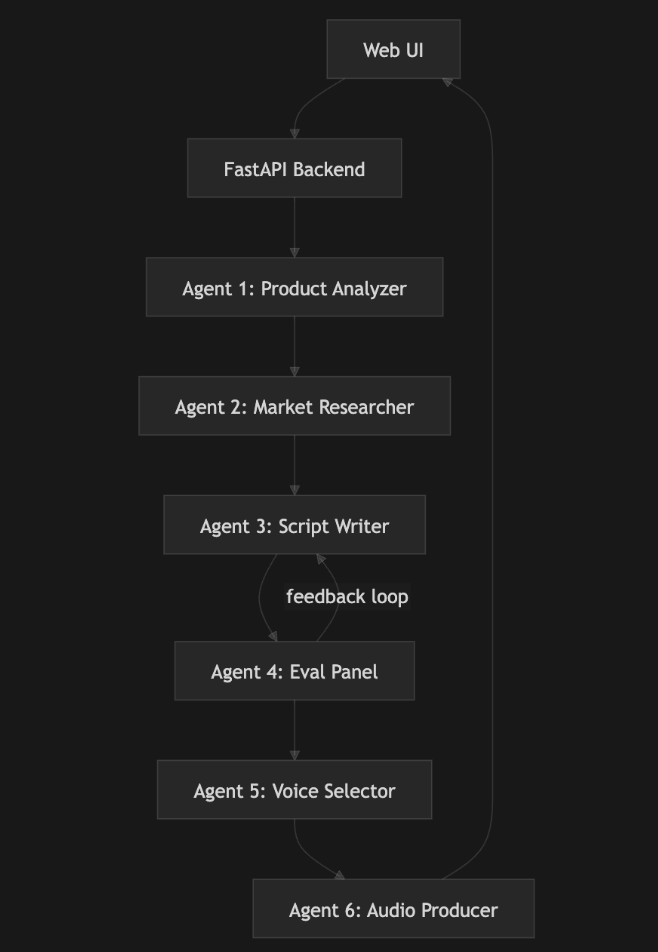

Interface, logic & agent system
OBD SuperStar Agent is an AI-powered application for telecom and VAS teams who need outbound dialer (OBD) campaigns: short, persuasive call scripts and broadcast-quality audio in the right language and regional style.
Users provide product documentation (or paste an existing script), choose country, operator (telco), and language. The system runs a chain of six specialised AI agents that analyse the product, research the market, write and evaluate scripts (with an optional feedback loop), select a market-appropriate voice, and produce mixed audio (voice + optional background music).
What you get: Multiple script variants tuned to the market, audio files ready for your OBD platform, and optional save to a dashboard. Script to Voice is a separate flow: paste any script → pick country and voice → generate audio without running the full pipeline.
The Web UI sends the request to the FastAPI backend, which runs the six agents in sequence. Agents 3 (Script Writer) and 4 (Eval Panel) form a feedback loop; once scripts are approved, the flow continues to Voice Selector and Audio Producer, and the final output returns to the Web UI.

| Step | What the user sees | Logic |
|---|---|---|
| 1. Configure | Product input, country, telco, language, promotion type, TTS engine, cache options. | Cache check can allow skipping Product Analysis + Market Research when reusing the same market. |
| 2. Generate | Pipeline Progress (7 steps) with real-time updates; “Back to configure” if stuck. | POST /api/generate/start → WebSocket /ws/progress/{id} and polling for status. |
| 3. Results | Scripts (expand/copy/edit), voice rationale, hook previews, “Generate Full Audio”, save to dashboard, download. | Full audio generated on demand; campaigns can be saved for the team. |
Paste or upload script → choose country, language, TTS engine, speed → voice previews → pick voice → generate final audio → download or save. Only Agent 6 (Audio Producer) runs.
Dashboard lists saved campaigns (play/download). Admin: pipeline settings (TTS model, voice speed, BGM, etc.), user management, and overridable agent prompts.
REST endpoints for start/status, cache, campaigns, auth, admin. WebSocket /ws/progress/{session_id} streams progress. A background task runs the six-agent pipeline and broadcasts each step to the UI.
| # | Agent | Role | Input → Output |
|---|---|---|---|
| 1 | Product Analyzer | Structured brief from product docs | In: Product document. Out: Brief (features, benefits, IVR angles). |
| 2 | Market Researcher | Market picture for country/telco | In: Brief + country + telco. Out: Audience, culture, tone, promotion ideas. |
| 3 | Script Writer | OBD scripts in required language/length | In: Brief + market + language. Out: Variants (hook, body, CTA, fallbacks). |
| 4 | Eval Panel | Quality-check scripts | In: Scripts. Out: Scores and feedback → feeds back to Script Writer (loop). |
| 3 again | Script revision | Rewrite using eval feedback | In: Scripts + feedback. Out: Revised variants. |
| 5 | Voice Selector | Choose voice for market and tone | In: Scripts + market + voices. Out: Primary + alternatives + rationale. |
| 6 | Audio Producer | Generate speech and mix for broadcast | In: Script + voice + country + BGM. Out: Hook previews, then full MP3/WAV (ElevenLabs / Murf / edge-tts). |
Frontend: Next.js 15, React 19, Tailwind. Backend: Python FastAPI, WebSockets. LLM: Azure OpenAI. TTS: ElevenLabs (eleven_v3), Murf AI, edge-tts. DB: Supabase or SQLite. Auth: JWT when configured.
OBD SuperStar Agent · blackNgreen ·